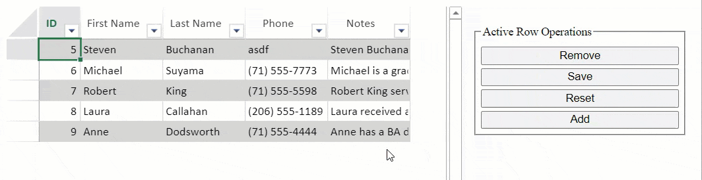
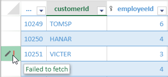

TableSheet provides the ability to interact with the data in the form of row operations such as create, read, update, and delete row operations. With these operations, you can conveniently sync edited row data with your database.
The following TableSheet class methods are available as row operations:
| Method | Description |
|---|---|
| addRow | Adds a new row to the TableSheet. |
| removeRow | Removes the specified row from the TableSheet. |
| saveRow | Saves the changes of the specified row of table sheet to data manager, including updated row or and inserted row. |
| resetRow | Resets the changes of the specified row of table sheet. |
The following GIF illustrates the row operations in action.

The TableSheet interacts with the Data Manager to make changes in the TableSheet data. If you want to sync the changed data with your remote database, automatic updates or batch updates should be enabled as well.
You can set either the automatic sync mode or the batch mode property when using the addTable method. Both the properties and their uses are described below.
| JavaScript |
Copy Code
|
|---|---|
var myTable = dataManager.addTable("myTable", { // ... other settings autoSync: true // enable the autoSync mode }); |
|
| JavaScript |
Copy Code
|
|---|---|
var myTable = dataManager.addTable("myTable", { // ... other settings batch: true, // enable the batch mode remote: { // ... other settings batch: { url: BatchApiUrl // specify the api url } } }); // Save all changes tablesheet.submitChanges(); // Or discard all changes tablesheet.cancelChanges(); |
|
TableSheet supports self-defined functions to configure the remote request options. By default, the TableSheet configures the remote requests by an object so if you want to handle the requests by yourself, replace the object with a function and the data changes will be passed to the function.
When using self-defined functions, the autoSync and batch modes have the following parameters:
The following code sample shows how to create and implement a custom request function.
| JavaScript |
Copy Code
|
|---|---|
// Create custom request function function sendRequest(url, options) { options.method = options.method || 'POST'; options.headers = { 'Content-Type': 'application/json; charset=utf-8' }; if (options.body) { options.body = JSON.stringify(options.body); } return fetch(url, options).then(resp => { if (resp.ok) { return resp.json(); } else { throw resp.statusText; } }); } //init a data manager var dataManager = spread.dataManager(); myTable = dataManager.addTable("myTable", { remote: { read: function () { return sendRequest(apiUrl, { method: 'GET' }); }, update: function (item) { return sendRequest(apiUrl, { body: item, method: 'PUT' }); }, create: function (item) { return sendRequest(apiUrl, { body: item }); }, delete: function (item) { return sendRequest(apiUrl, { body: item, method: 'DELETE' }); }, batch: function (changes) { return sendRequest(batchApiUrl, { body: changes }); } }, batch: true, onFailed: function(type, args) { console.log("error", type, args); } }); |
|
When the server returns connect error (e.g. HTTP 404, HTTP 500) and server database error (e.g. duplicated primary key, update failed), the TableSheet lets the user handle it through call-back or displays the error.
The row header displays a red alarm icon and when the user hovers on it, shows the error tips.
